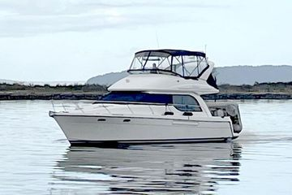

B-Atlas Boat Guide · BAYL-3788
Bayliner 3788 Motor Yacht Two-Generation Flybridge Motor Yacht
1996–2002
The Bayliner 3788 Motor Yacht is a wide-beam two-stateroom flybridge cruiser built in two distinct generations. Both gasoline and Cummins diesel twin-inboard packages were available. The design emphasizes interior volume, dual-helm cruising and value, with shallow deadrise that favors efficiency and planing performance over a soft ride in larger seas.

- Length
- 39.33 ft
- Beam
- 13.58 ft
- Draft
- 3.33 ft
- Hull behaviour
- Planing
- Fuel
- Gasoline
- Propulsion
- Shaft
- Engine configuration
- Twin Inboard
- Boat family
- Motor Yacht
- Construction
- Fiberglass
Best for
- Extended inland and coastal cruising
- Families wanting two cabins and dual helms
- Buyers seeking large-boat accommodation at value-oriented pricing
Trade-offs
- Shallow-deadrise hull can ride firmly in rough water
- Twin engines and yacht-scale systems increase operating cost
- Flybridge access is steep on the earlier generation
- Specifications changed materially with the 2001 redesign
Known concerns
- No model-specific concern has been promoted to B-Atlas’s evidence threshold. This does not mean the model has no age-, condition- or hull-specific risks.
Inspection focus
- Both engines, gears, shafts and cooling systems
- Deck, window and flybridge structure
- Fuel, water and sanitation tanks
- Electrical and climate-control systems
Continue researching
Related boat models
Bayliner 3870 / 3888 Motor Yacht Mid-Cabin Flybridge Motor Yacht
38.17 ft · Semi-Displacement
Bayliner 4087 Cockpit Motor Yacht Cockpit Motor Yacht
41.42 ft · Planing
Bayliner 3388 Motor Yacht Flybridge Motor Yacht
32.92 ft · Semi-Displacement
Bayliner 3270 / 3288 Motor Yacht Explorer / Motor Yacht
32.08 ft · Semi-Displacement
Bayliner 3258 Command Bridge Command Bridge Cruiser
32.92 ft · Planing
Silverton 34 Motor Yacht Aft Cabin Motor Yacht
39.83 ft · Planing
About this record
B-Atlas preserves uncertainty: missing information remains unknown rather than being treated as a negative. Specifications and guidance describe the model record; individual boats can differ by year, equipment, refit and condition.